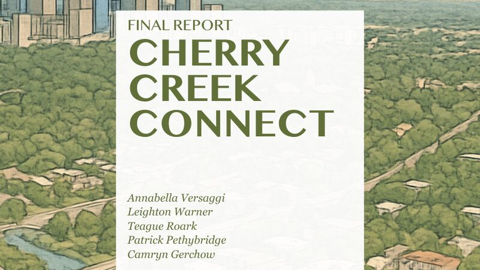
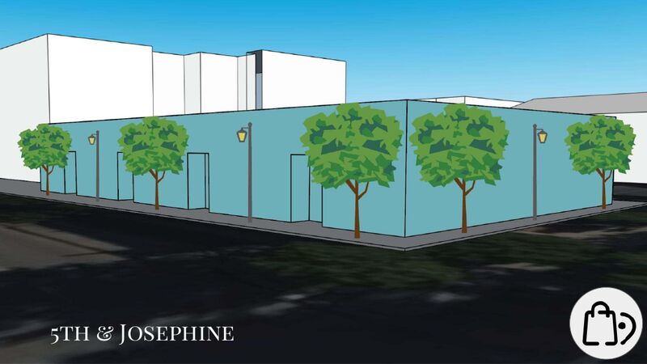
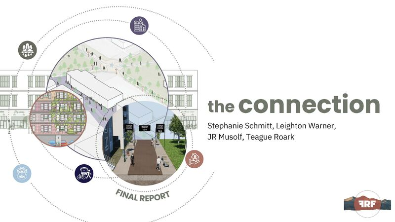
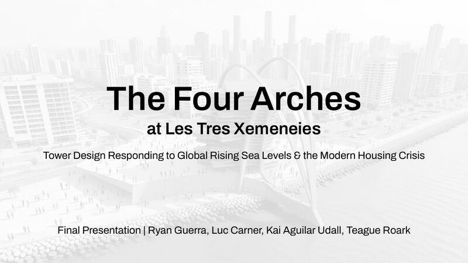
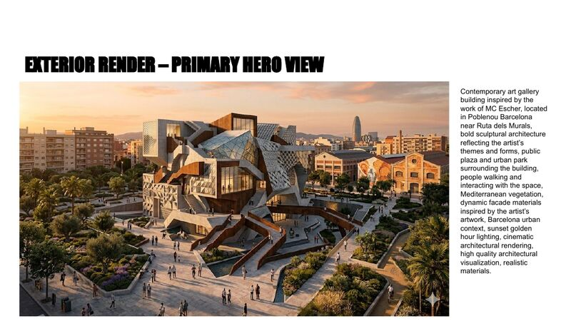
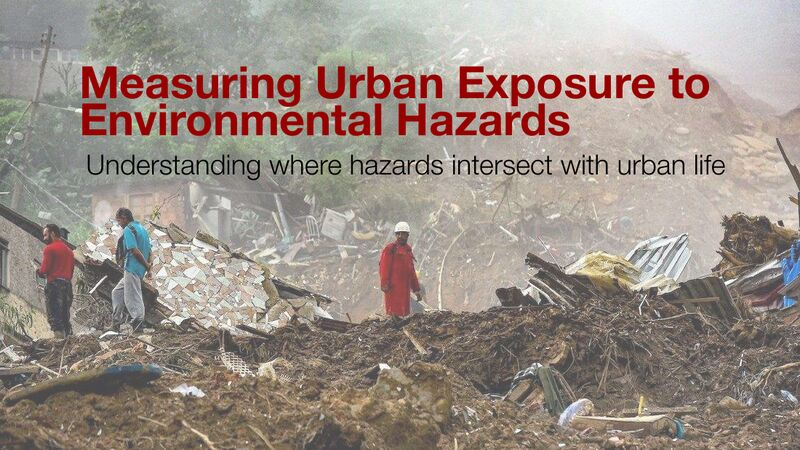
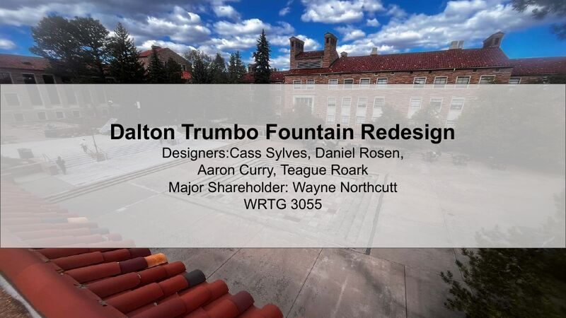

about me
I’m Teague Roark, an Environmental Design student. I’m interested in how buildings, landscapes, and the spaces between them shape the way people live, move, and gather.
My work moves between hand drawing, physical models, and digital tools, starting from the site and working outward to form, material, and light.
[Placeholder — a line or two about what Teague does outside the studio.]
projects
cherry creek, denver
Urban design · PLAN 2100 · team project with Annabella Versaggi, Patrick Pethybridge, Leighton Warner, and Camryn Gerchow

cherry creek connect
The final report: vision, SWOT analysis, and assessments of urban heat, parking, and transportation, leading to a plan for a better-connected Cherry Creek.
final report · 90 pages · pdf
cherry creek presentation
Concept plan, new amenities, and residential and commercial building types for the district.
presentation · 43 slides · pdfcherry creek story map
An interactive map-based story of the project.
story map · arcgis ↗north college ave, fort collins
Sustainable planning and urban design · PLAN 3100 · The Front Range Firm, with Stephanie Schmitt, Leighton Warner, and JR Musolf

the connection
Final report for 1636 N. College Avenue: turning a vacant, car-oriented lot into a mixed-use, walkable community hub.
final report · 21 pages · pdfcomprehensive analysis for redevelopment
Land use, demographics, and infrastructure around the former Albertsons site in North Fort Collins.
site analysis · 7 pages · pdfinitial design proposal
First design concept for the site, built around sustainability, equity, and cultural identity.
proposal · 3 pages · pdfbarcelona study abroad
Architecture and environmental work from a semester in Barcelona

the four arches
A tower at Les Tres Xemeneies responding to rising sea levels and the housing crisis. With Ryan Guerra, Luc Carner, and Kai Aguilar Udall.
architecture final · 39 slides · pdf
m.c. escher, visualized
An architectural visualization of the optical illusions in M.C. Escher’s prints.
visualization · 27 slides · pdfchemical pollution in the port
The sources of pollution at the Barcelona Port and Zona Franca, and the Mediterranean Action Plan that addresses them.
research poster · 2 pages · pdfresearch & writing
Studies, presentations, and policy writing from ENVD and planning courses

measuring urban exposure to hazards
Where environmental hazards overlap with people, places, and assets in cities. ENVD 4100.
presentation · 16 slides · pdf
dalton trumbo fountain redesign
A redesign of the campus fountain. With Cass Sylves, Daniel Rosen, and Aaron Curry. WRTG 3055.
presentation · 22 slides · pdfstory map
An interactive map-based story.
story map · arcgis ↗addressing traffic violence
A policy brief to city council on immediate, measurable steps to make streets safer. PLAN 3005.
policy brief · 7 pages · pdfnegotiation and community disputes
A personal theory of negotiation, through the Limelight Hotel case study. ENVD 4363.
essay · 7 pages · pdfskills
- Hand drafting and sketching
- Physical model making
- Rhino 3D
- AutoCAD
- Adobe Illustrator, Photoshop, and InDesign
- Site analysis and mapping
- Laser cutting and fabrication